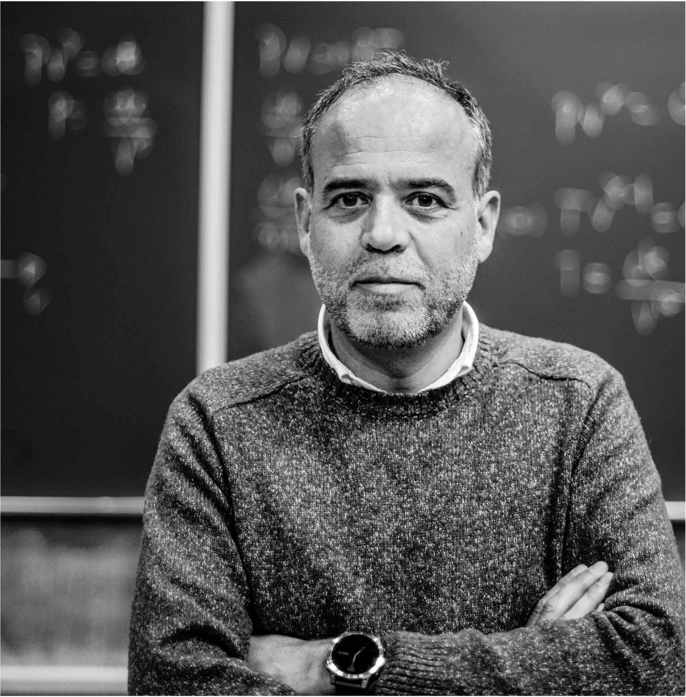

Filipe Ferreira da Silva - group leader
Associate Professor with Habilitation
Department of Physics · CEFITEC – Centre of Physics and Technological Research
Universidade NOVA de Lisboa
e-mail: f.ferreiradasilva@fct.unl.pt
Birthdate: 15 October 1976, Portuguese
ResearcherID: I-7238-2013 · Scopus Author ID: 24477190300 · ORCID: 0000-0002-2182-2965
Current Position
- Associate professor with habilitation at the Department of Physics, School of Science and Technology, NOVA University Lisbon
- Vice-Coordinator of CEFITEC – Centre of Physics and Technological Research
Former Positions
- Assistant professor, Department of Physics, School of Science and Technology, NOVA University Lisbon, 2018–2024
- Individual fellow IF-FCT, Department of Physics, School of Science and Technology, NOVA University Lisbon, 2015–2018
- Post-Doc fellow, FCT-MCTES, Department of Physics, School of Science and Technology, NOVA University Lisbon, 2010–2015
- Post-Doc fellow, ANRS, Laboratoire Chimie et Physique, Université Paris-SUD, 2009–2010
- Sales and technician for iron protection solutions at Coventya and CIN, 2002–2007
Education
- Habilitation in Atomic and Molecular Physics, NOVA University Lisbon, 2022
- PhD in Physics, University of Innsbruck, 2009
- MSc in Chemical and Biochemical Engineering, NOVA University Lisbon, 2007
- Degree in Chemical Engineering, NOVA University Lisbon, 2001